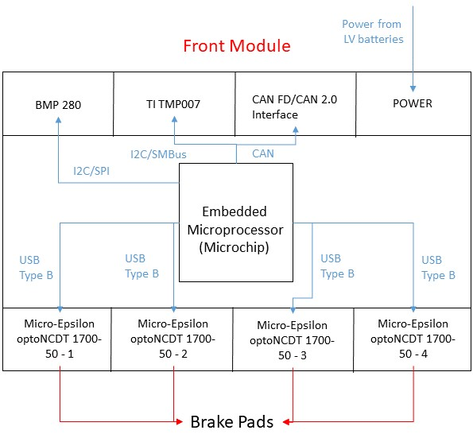
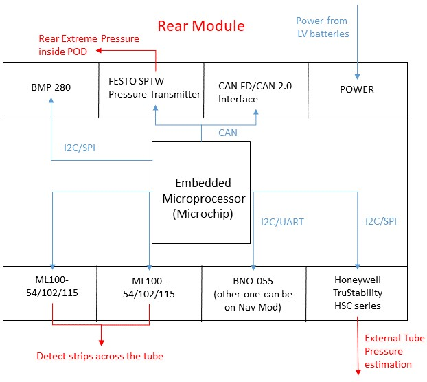

Electronics Subsystem Design, Hyperloop India
The work aims at designing and building a pod prototype for the Hyperloop SpaceX competition. The Hyperloop India team consists of Mechanical, CFD, Propulsion, Software and Electronics Subsystems. As a member of Electronics subsystems, I:


Related Publications
People

Other Projects: Quadruped Control | Manipulator Control | Quadrotor Control | Autonomous Vehicles | Health Monitoring Device | Hyperloop